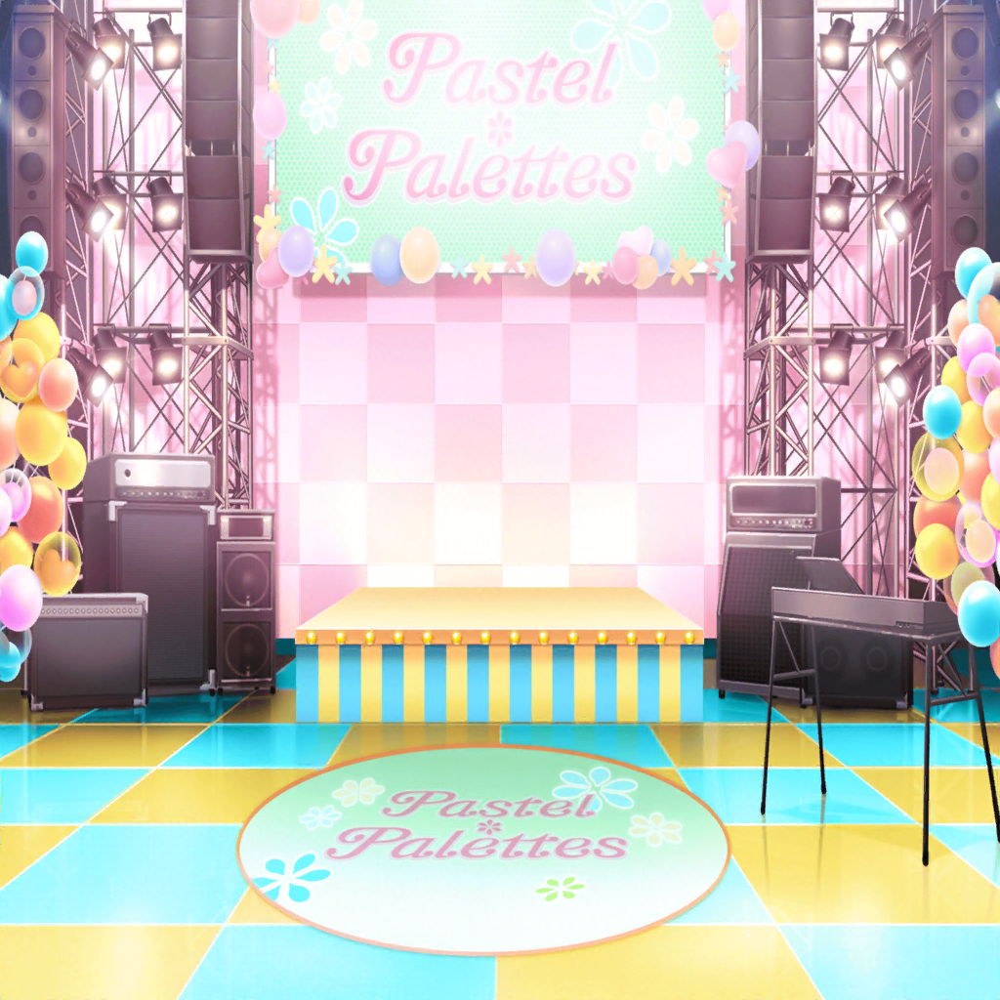

イベント会場
彩
皆さーん、こんにちは！
今日はイベントに集まってくれてありがとうございます！
イヴ
いよいよMCのタイミングですね……！
麻弥
はい、事務所の許可も下りましたし、がんばりましょう！
イヴ
ちゃんと私達の気持ちは届くのでしょうか……？
もし届かなかったら……
日菜
ダメダメ、イヴちゃん！
また顔がしょぼんとしてきたよー？
イヴ
ご、ごめんなさい！
いざとなったら、不安になってきてしまって……
麻弥
大丈夫ですよ！ ジブン達がついていますから！
日菜
そうそう。思ってること言うだけなんだし簡単だよー
千聖
日菜ちゃんはそうなのかもしれないけど、
自分の気持ちを伝えるのって難しいものなのよ
千聖
心配しなくていいわ、イヴちゃん。
言葉に詰まった時は、私達がフォローするから
イヴ
皆さん、ありがとうございます……！
麻弥
では、彩さんのMCが終わったら行きますよ
彩
みんな、助けて〜！
麻弥
えっ、MCはどうしたんですか、彩さん！？
千聖
まだ犬だと思ったら猫のところまで話していないわよ？
彩
だ、だって、みんな聞いてくれなくて……
ファンA
コールはやめてくださいね。メンバーにも迷惑ですから
ファンB
はぁ？ 黙って見てるだけで応援してるつもり？
ファンC
ちょっと。イベント中なんだからいい加減にしなよ
麻弥
あ、あっちこっちでギスギスしてますよ！
日菜
えー、これから話すところなのにー
千聖
皆さん、イベント中なので私語はちょっと……
イヴ
（この前のイベントの時と同じ状況です……！）
イヴ
（で、でも今日は挫けません。みんなのために……！）
イヴ
皆さん、ケンカはやめてください！！
ファンA
だーかーら、コールは迷惑なんです！
ファンB
あーもう！ ライブは盛り上げないとダメでしょうが！
イヴ
うう、ま、負けません……！
皆さん！ ケンカはやめてくださーーーいっ！！
ファン
！！？
彩
わ、おっきな声……
麻弥
今日のイヴさん、迫力がありますね……！
イヴ
あ、あの、少しだけ、お話を聞いてください！
皆さんにお伝えしたいことがあります！
イヴ
まず、この間のことを謝ります。
SNSでのコメントでお騒がせして、ごめんなさい
イヴ
ただ、皆さんに仲良くしてほしくてコメントしたんです。
大切なファンの人達がケンカしているのが悲しくて……
麻弥
そ、そうです！
ジブン達はケンカなんてしてほしくありません！
彩
ケンカの原因は、私達も知ってます。
お互いパスパレのことを大事に想ってるから、
気持ちがぶつかってケンカになっちゃったんですよね
千聖
コール、私達は嬉しく思っていますよ。
ライブを盛り上げてくださってありがとうございます
日菜
でも、やりすぎなのはちょっと微妙だよねー。
彩ちゃん、そっちに引っ張られて、自分の音見失っちゃうし
彩
そ、それは否めないかも……
イヴ
パスパレを大事に想ってもらえて、とても嬉しいです。
私にとっても、パスパレは特別で大切なグループですから
イヴ
パスパレに入るまで、ひとりでモデルのお仕事をしていたので、
一緒にがんばれる仲間ができたことが、すごく嬉しいんです
イヴ
でも、メンバーの皆さんだけが仲間ではありません。
応援してくれるファンの皆さんも、パスパレの仲間です！
イヴ
ここにいるのは、パスパレで繋がった仲間……
せっかく生まれた絆を、私は大切にしたいと思っています
イヴ
そして、皆さんにもそう思ってもらえたら嬉しいです。
イチゴイチエのこの巡り合わせは、奇跡のようなものですから
麻弥
パスパレを大好きなイヴさんの気持ち、とても伝わってきますね
彩
うん、そうだね
イヴ
ここにいる仲間が力を合わせれば、きっとすごいことができます。
パスパレが日本の天下を取ることだってできるはずですよ
イヴ
皆さん！ 一緒に天下を取りにいきましょう〜！
ファン
おーーーーーー！！！
彩
わっ、すごい拍手……！
日菜
ヨッ！ イヴちゃん、日本一！
千聖
日本の天下を取るのがパスパレの目標だったかしら……？
麻弥
戦国武将のような目標はなかったと思いますけど……
でも、ファンの人達の気持ちは一つになったみたいですよ
彩
うん、イヴちゃんカッコいいね！
イヴ
皆さん、ご静聴ありがとうございました！
イヴ
では、最後にハグをしましょう！
お隣の方とパスパレで繋がった絆を確かめあってください！
イヴ
私も混ざります！
彩
ええっ！？
お客さんにハグしに行っちゃダメだよっ！
千聖
前にも言ったでしょう？
ファンの人との距離をちゃんと考えて
イヴ
ハグ、ダメですか……？
距離感って、難しいです……